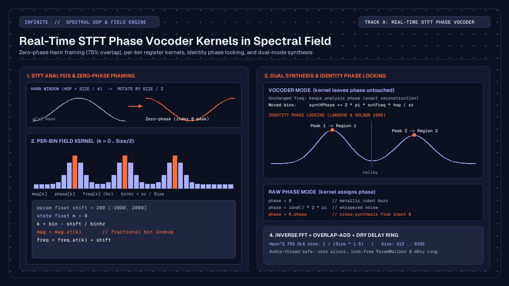

Product
Real-time STFT phase vocoder kernels in Spectral Field
How Infinite runs per-bin STFT phase vocoder kernels on the audio thread: zero-phase framing, identity phase locking, per-bin state, and dual-mode synthesis.

on this page
Most audio environments split spectral processing into two rigid camps: fixed-function plugins like spectral gates and pitch shifters, or offline Python scripts that cannot run on a live audio callback. Writing a custom phase vocoder normally means managing ring buffers, FFT twiddle factors, phase unwrapping, and overlap-add normalisation in C++ before you hear a single bin.
In Infinite, the Spectral Field node (AudioEffects / Spectral Field) compiles Field language kernels to run once per frequency bin inside a real-time Short-Time Fourier Transform (STFT) host. You write short expressions over bin magnitude, phase, and instantaneous frequency, and the engine handles framing, phase coherence, and latency-compensated dry/wet mixing on the audio thread with zero allocations.
Streaming STFT architecture and zero-phase framing
SpectralFieldEngine processes up to two channels (kMaxChannels = 2) using power-of-two FFT sizes from 512 to 8192 samples (2048 by default), selectable directly on the node card. The hop size is fixed at Size / 4 (75% overlap) with a periodic Hann analysis and synthesis window. Because a squared Hann window at 75% overlap sums to 1.5, the overlap-add stage divides by Size * 1.5 for unity reconstruction.
Before the forward real FFT runs, each windowed frame is circularly rotated by Size / 2 samples (zero-phase framing). Rotating the buffer places the window peak at sample index 0, so all bins within a sinusoid's main lobe share a single phase rather than alternating sign across adjacent bins. That property becomes critical when a kernel shifts frequencies and triggers phase locking.
Built-in variables inside a Spectral Field kernel
For each hop, the engine analyses bins = Size / 2 + 1 frequency bins and executes the compiled SampleProgram register machine across k = 0 .. bins - 1:
mag: Window-gain-compensated bin magnitude (1.0for a 0 dBFS sine on its peak bin, clamped at+60 dBon output).phase: Analysis phase in radians.freq: Instantaneous bin frequency in Hz, computed from the inter-frame phase advance (Csound pvsstyle).binandbins: Current bin index and total bin count (Size / 2 + 1).binhz: Bin spacing in Hz (sr / Size).sr: Audio sample rate in Hz.state: Persistent per-bin memory banks (stateAandstateB) swapped each frame sostate.at(k)reads the previous frame's value.input bin audio B: Optional second audio input (B.mag,B.phase,B.freq) for cross-synthesis.
Dual synthesis modes: vocoder vs raw phase
The engine inspects what the kernel writes at compile time to pick between two reconstruction paths, without requiring a manual mode switch:
- Vocoder mode (default): When the kernel leaves
phaseuntouched and modifiesmagorfreq, any bin whose outputfreqequals the analysisfreqkeeps its exact analysis phase. Magnitude-only kernels such asLow-passorGatetherefore reconstruct with zero phase smear. Any bin whosefreqchanged advances its previous synthesis phase by2 * pi * freq * hop / sr. - Raw phase mode: When the kernel explicitly assigns
phase, the inverse FFT rebuilds each bin directly frommagand the kernel'sphase. This allows effects likeRobot / whisper(settingphase = 0for a metallic robotised buzz orrand() * 2 * pifor whispered noise) orCross-synth(phase = B.phase).
Identity phase locking for pitch and frequency shifts
Naive phase vocoders smear transients and produce a hollow, phasiness artefact when bins are shifted in frequency, because adjacent bins belonging to the same sinusoidal peak drift out of phase. To preserve vertical phase coherence, SpectralFieldEngine applies identity phase locking (Laroche and Dolson, 1999) over every contiguous run of moved bins in vocoder mode.
For each run of moved bins, the engine locates local magnitude peaks (outMag[j] > outMag[j - 1] and outMag[j] >= outMag[j + 1]). Between every pair of consecutive peaks, it finds the lowest magnitude valley and assigns the peak's synthesis phase to all bins in that peak's region. Because zero-phase framing already aligned the main lobe around each peak, locking the region to the peak phase keeps harmonics tight during pitch shifts and frequency warps.
Practical spectral kernels in a few lines
All eight factory presets in SpectralFieldNode demonstrate how compact per-bin expressions map to classic spectral DSP. A frequency shifter reads magnitude and frequency from a fractional bin offset using .at() interpolation:
param float shift = 200 [-2000, 2000]
k = bin - shift / binhz
mag = mag.at(k)
freq = freq.at(k) + shiftA spectral freeze holds the last captured magnitude and frequency per bin using two state cells:
param float hold = 0 [0, 1]
state float m = 0
state float f = 0
m = if(hold > 0.5, m, mag)
f = if(hold > 0.5, f, freq)
mag = m
freq = fBecause SpectralFieldNode maintains a ParamMailbox for lock-free parameter smoothing and swaps compiled programs via SampleSlotT, you can edit kernel code live or modulate hold, shift, and cutoff from any LFO, envelope, or visual modulator in the Infinite node library.
Real-time safety, latency, and honest limits
SpectralFieldEngine::Prepare() pre-allocates all FIFOs, overlap-add rings, FFT scratch buffers, and per-bin state banks for kMaxSize = 8192 on the main thread. Switching FFT sizes via SetSizeLog2(), resetting transport, and running Process() on the audio thread never allocate or take a lock.
There are clear engineering trade-offs to keep in mind. Latency is always equal to the chosen FFT Size (512 to 8192 samples, or roughly 10.7 ms to 170.7 ms at 48 kHz), which AudioSpectralFieldNode reports via LatencySamples() and compensates internally on its dry delay ring (mDry) so the mix knob stays phase-aligned. Processing is currently capped at stereo (2 channels), and changing the FFT size resets the overlap-add ring and per-bin state.
For developers building custom audio-visual instruments or automated headless patches, Spectral Field brings per-bin STFT programming into the same unified graph as 3D geometry, shaders, and modulators. Explore the full node catalogue and architecture details on the Infinite developers page.